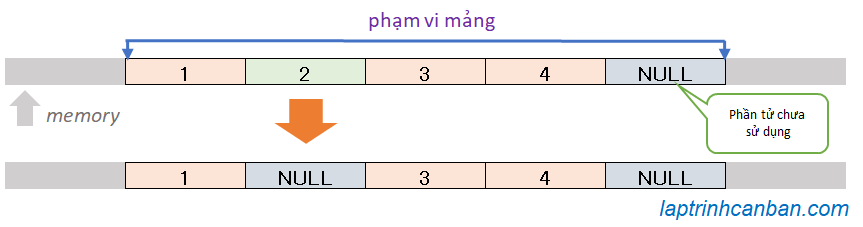
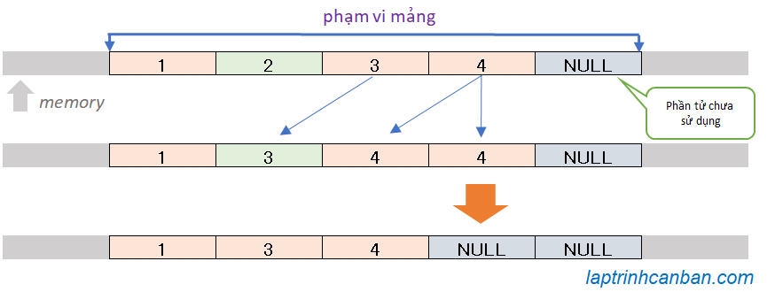

Cùng tìm hiểu về cách xóa mảng trong C. Bạn sẽ học được cách xóa 1 phần tử trong mảng C, cách xóa nhiều phần tử trong mảng C, cũng như cách xóa toàn bộ mảng trong C sau bài học này.
Xóa 1 phần tử trong mảng C
Khác với các ngôn ngữ lập trình khác thì mảng trong C có kích thước cố định được quyết định khi khai báo mảng, và chúng ta không thể thay đổi kích thước của mảng sau khi khai báo.
Bởi vậy, chúng ta không thể xóa phần tử trong mảng C, sau khi đã tạo nó. Điều duy nhất chúng ta có thể làm, đó là thay thế giá trị các phần tử cần xóa thành giá trị NULL, và ghi nhớ các phần tử này chưa được sử dụng trong chương trình mà thôi.
Lưu ý giá trị NULL trong C nếu ở dạng char thì là ký tự \0, và nếu ở dạng int thì là số 0. Tuy nhiên về bản chất thì NULL có nghĩa là ký tự rỗng có nghĩa là không tồn tại giá trị.

Chúng ta có thể đơn giản xóa 1 phần tử trong mảng bằng cách này như sau:
/*mảng đã sử dụng hết phần tử*/ |
Tuy nhiên sau khi thay thế phần tử cần xóa bằng giá trị NULL bằng cách ở trên, thì phần tử này sẽ vẫn nằm ở giữa các phần tử khác trong mảng, gây nên bất tiện khi sử dụng mảng. Do vậy chúng ta sẽ cần phải chuyển phần tử này về cuối mảng để dễ sử dụng hơn bằng cách thứ 2 sau đây:

Các bước chúng ta thực hiện sẽ là:
Thay đổi giá trị của tất cả các phần tử từ vị trí cần xóa trong mảng, bằng giá trị của phần tử đứng đằng sau nó.
Thay đổi giá trị của phần tử cuối cùng thành NULL.
Sau khi tiến hành xóa 1 phần tử trong mảng như trên, mảng ban đầu sẽ bao gồm các phần tử còn lại ở đầu mảng, và các phần tử NULL ở cuối mảng.
Nếu bạn muốn lấy các phần tử không bị xóa từ mảng ban đầu, chúng ta đơn giản tạo một mảng mới, sau đó sử dụng vòng lặp để lấy các phần tử chưa bị xoá từ đầu mảng ban đầu là xong.
Và chúng ta viết hàm để thực hiện việc xóa 1 phần tử trong mảng C như sau:
|
Kết quả phép xóa 1 phần tử trong mảng C sẽ như sau:
Nhap so phan tu: 5 |
Xóa nhiều phần tử trong mảng C
Để xóa nhiều phần tử trong C, chúng ta chỉ cần lặp lại xử lý xóa 1 phần tử trong C ở trên nhiều lần là xong.
Chúng ta sẽ tạo ra thêm một hàm xóa nhiều phần tử trong mảng và kết hợp với hàm xóa 1 phần tử trong mảng ở trên như sau:
|
Kết quả phép xoá nhiều phần tử trong mảng C như sau:
Nhap so phan tu: 5 |
Xóa toàn bộ mảng trong C
Sau khi tạo một mảng trong C, có những lúc chúng ta không cần tới mảng đó nữa và muốn xóa nó đi trong chương trình. Nếu trong các ngôn ngữ lập trình khác chúng ta có thể làm điều này rất dễ dàng, ví dụ như sử dụng lệnh delete trong C++ chẳng hạn, thì mọi chuyện lại phức tạp hơn trong ngôn ngữ C. Tùy thuộc vào cách bạn đã tạo ra mảng trong C như thế nào mà chúng ta có thể hoặc không thể xóa mảng trong C.
Thông thường khi tạo mảng trong C, chúng ta sẽ dùng tới cách khai báo hoặc khởi tạo như sau:
int num[4]; |
Rất tiếc là với cách tạo mảng như trên, do sau khi tạo mảng này thì một vùng có kích thước cố định với kích thước mảng đã được tạo ra trong bộ nhớ máy tính để lưu mảng, và trong trường hợp này thì chúng ta không thể xóa mảng đã tạo được.
Trường hợp duy nhất mà chúng ta có thể xóa mảng trong C đó là khi chúng ta đã cấp phát bộ nhớ động để lưu mảng đã tạo ra, như các cách sau:
int *A=malloc(20 * sizeof(int)); |
Nếu bạn đã tạo mảng trong C bằng cách cấp phát bộ nhớ động cho nó, chúng ta có thể dùng hàm free() để giải phóng bộ nhớ động này, và qua đó có thể xóa mảng trong C sau khi tạo nó.
Ví dụ:
int *A=malloc(20 * sizeof(int)); |
Bạn có thể tham khảo cách tạo mảng bằng cách cấp phát bộ nhớ động, và cách xóa mảng sau khi dùng xong tại các ví dụ cụ thể trong các bài dưới đây:
- Xem thêm: Xóa khoảng trắng trong chuỗi C
- Xem thêm: Chèn chuỗi trong C
Tổng kết
Trên đây Kiyoshi đã hướng dẫn bạn cách xoá mảng trong C rồi. Để nắm rõ nội dung bài học hơn, bạn hãy thực hành viết lại các ví dụ của ngày hôm nay nhé.
Và hãy cùng tìm hiểu những kiến thức sâu hơn về C trong các bài học tiếp theo.
URL Link
https://laptrinhcanban.com/c/lap-trinh-c-co-ban/mang-trong-c/xoa-mang-trong-c/
HOME › lập trình c cơ bản dành cho người mới học lập trình>>14. mảng trong c